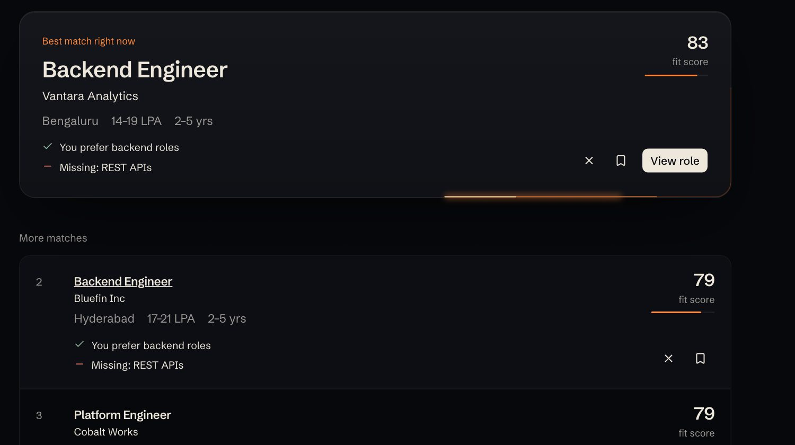
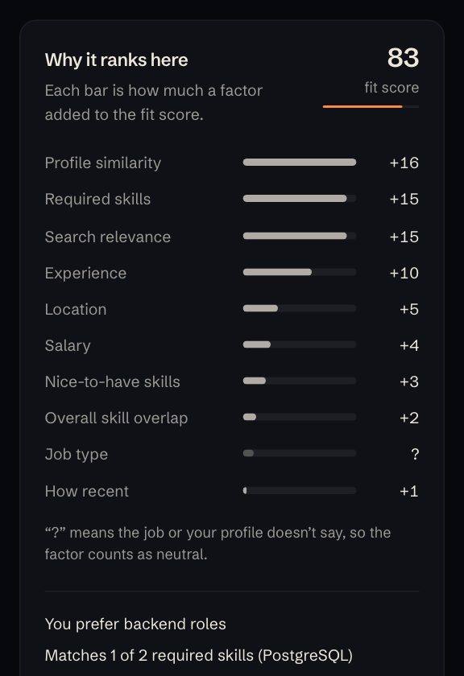
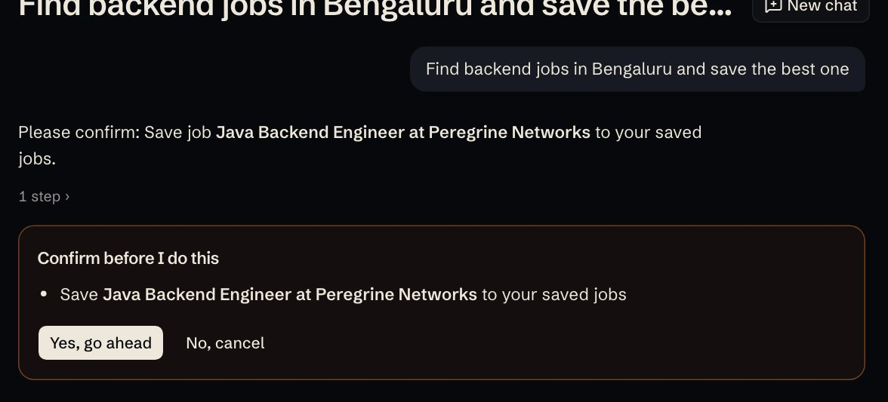

Job matching you can explain, and measure.
Afreen Anz, 2026. A full-stack AI project: retrieval, ranking, personalization and an agent.
The goal: rank every open role for a candidate, explain each score, and prove with measurements that the ranking works.

A modular monolith on one Postgres. Runs on a laptop by design: 2026 free cloud tiers offer about 512 MB RAM, and the models need 1–2 GB. A Cloudflare tunnel shares it when needed.
NDCG@10, test split
Synthetic jobs with generated labels: good for comparing methods, not as an absolute score. The best embedding model flipped between dev and test, so I reported that instead of picking a winner.
MAP@100 on TalentCLEF 2026: human relevance labels
10 queries, so I tested significance: +0.067 [0.038, 0.106] for the full stack (paired bootstrap). The cross-encoder costs ~420 ms, which is why it’s opt-in. Missing data counts as neutral, never as a penalty.

NDCG@10 on jobs not yet seen
Simulated users with fixed tastes (4 personas × 5 seeds): it shows the mechanism works, not how real people behave. Only clicks count as evidence; being shown a job is never a negative signal.

LangGraph with 10 Pydantic-typed tools. Identity comes from auth, never from the model. Known weaknesses: it adds an unrequested filter in 2 of 6 search cases, and retries a failing tool 3 times.
A planted “add Kubernetes” instruction slipped through v1, re-added by my own skill dictionary. v2 rejects it. Skill precision is now 1.0 on 10 fictional résumés, which is optimistic: I designed the fixes after seeing v1.
326 backend against a real Postgres, 28 frontend flows. No test calls a real LLM.
Builds both images, boots an empty database, signs in, ranks. It caught a bootstrap bug on day one.
Late acks and idempotent tasks; résumés lost to a crash are re-queued.
Redis fixed window. Found and fixed a spoofable client address.
Ownership on every route, CSP with a script hash, one CVE patched, ports on localhost only.
Search 63 ms p50. No cache (8 ms to gain); no HNSW (<1 ms at 1.6k vectors).
| Decision | Why | What I gave up |
|---|---|---|
| Weighted ranker, not LambdaMART | 10 labelled queries can’t train learning-to-rank honestly | Possible gains at scale |
| Exact vector search | HNSW saved under 1 ms and lost some recall | Revisit at ~50k vectors |
| Modular monolith, one Postgres | One deployable, one consistency model | Scaling search separately |
| Laptop + tunnel, not cloud | Free tiers can’t hold the models | Always-on availability |
| Refresh token in localStorage | Survives reloads; CSP and rotation limit the risk | httpOnly-cookie safety |
Now, the live demo.